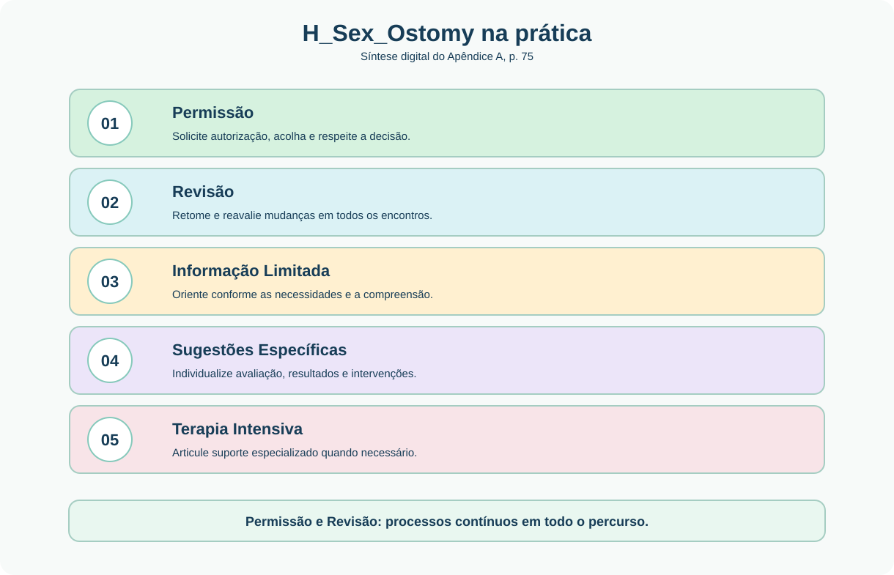

A sexualidade também faz parte da reabilitação.
Conheça o H_Sex_Ostomy, estude seu manual e explore situações de cuidado em um ambiente desenvolvido para apoiar a aprendizagem de enfermeiros.
Programa científico • Navegação livre • Aprendizagem interativa
 Capa original do manual, 2026
Capa original do manual, 2026Conheça
Finalidade, missão, valores, autoria e fundamentos do programa.
Sobre o H_Sex_Ostomy → 02Estude
Componentes EX-PLISSIT, metodologia, fluxograma e manual organizado.
Explorar o programa → 03Utilize as ferramentas
Calculadoras de escalas e construção assistida do plano de cuidados.
Abrir ferramentas → 04Aprenda fazendo
Trilha de decisões e simulações com feedback, também para o workshop.
Entrar no workshop →Um cuidado contínuo, sem etapas rígidas.
Permissão e Revisão acompanham todo o percurso. Informações, orientações individualizadas e suporte especializado respondem às demandas e às decisões da pessoa.
Como funciona o fluxo →
O que é o H_Sex_Ostomy?
Uma proposta de cuidado de enfermagem voltada à saúde sexual e à reabilitação de homens com estomas de eliminação.
Quem somos
Autoria, orientação e vínculos institucionais do programa.
Programa em prática
Compreenda cada componente, sua finalidade e seu lugar no acompanhamento longitudinal. Explore em qualquer ordem.
Fluxograma do cuidado
Consulte a figura original e explore os caminhos interativos do programa.
Manual técnico e educativo
Sumário organizado conforme os capítulos e as páginas originais, com leitura orientada, imagens selecionadas e acesso a tópicos relacionados.
Central de Avaliação da Sexualidade
Instrumentos padronizados com cálculos de escores e apoio à interpretação, e um roteiro de avaliação clínica específico do programa.
Calculadora IIEF-15
Insira os valores de cada item da versão autorizada do instrumento. A plataforma calcula os cinco domínios e interpreta o domínio de função erétil.
Calculadora QS-M
Insira os valores dos dez itens do Quociente Sexual — Versão Masculina para obter o escore de 0 a 100 e a faixa de interpretação.
Planejador de Cuidados
Consulte relações NANDA-I, NOC e NIC apresentadas no manual e elabore um plano educativo revisável, sem diagnóstico automático.
Trilha de decisões
Experimente o fluxograma original. Escolha “Sim” ou “Não”, observe o que fazer e avance ou retorne livremente.
Casos para aprender fazendo
Três momentos de um atendimento fictício. Escolha uma conduta e receba feedback pedagógico.
Modo facilitador
Uma apresentação curta com atalhos para o fluxograma, o manual e as simulações, sem perder seu lugar no roteiro.
Contato
Informações e comunicação acadêmica sobre o H_Sex_Ostomy.